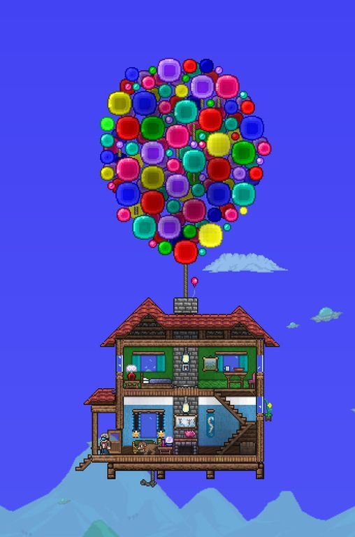
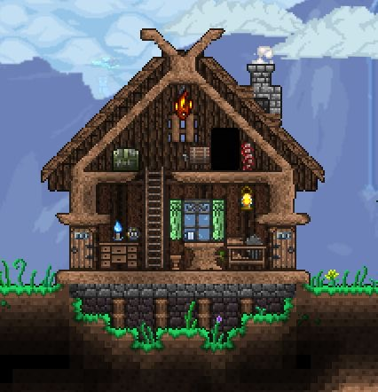
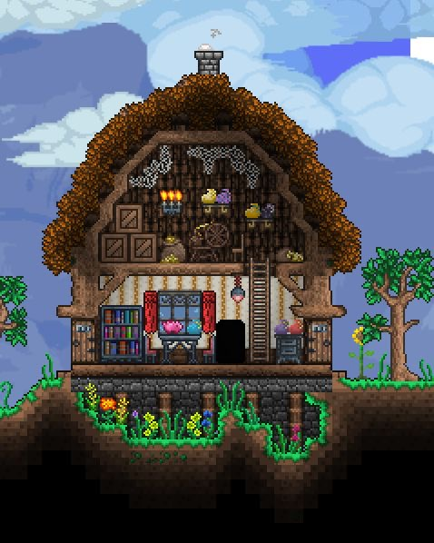
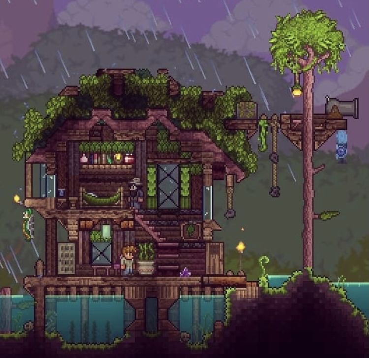
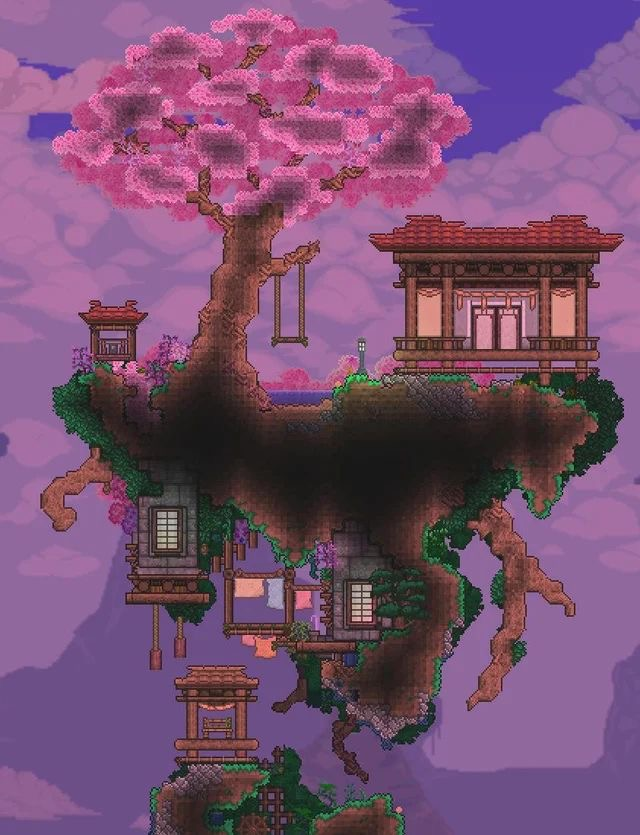
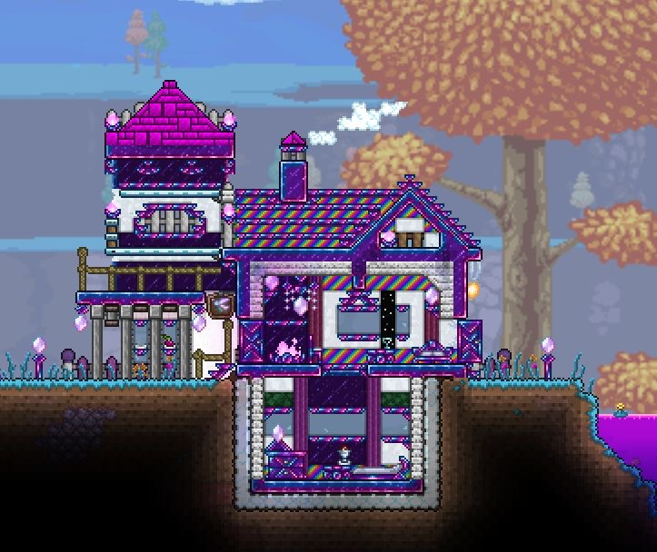
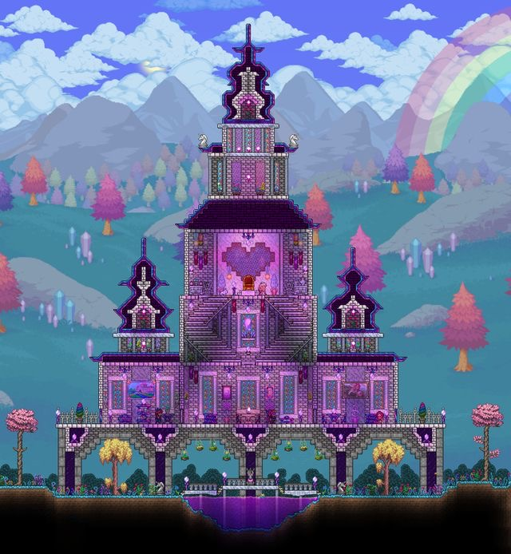

Casas
Una casa es una estructura creada por el jugador. Son usadas por los NPCs para vivir, habiendo uno por cada casa construida. Estos se refugian en sus casas cuando es de noche y en eventos. Las camas solamente pueden ser usadas dentro de una casa.
Algunas ideas de casas creativas:






